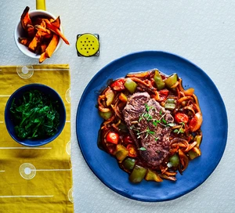

Steak Goulash

Ingredients
- 3 tsp rapeseed oil , plus extra for the steaks
- 250g sweet potatoes , peeled and cut into narrow chips
- 1 tbsp fresh thyme leaves
- 2 small onions , halved and sliced (190g)
- 1 green pepper , deseeded and diced
- 2 garlic cloves
- 1 tsp smoked paprika
- 85g cherry tomatoes , halved
- 1 tbsp tomato purée
- 1 tsp vegetable bouillon powder
- 2 x 125g fillet steaks , rubbed with a little rapeseed oil
- 200g bag baby spinach , wilted in a pan or the microwave
PAGE UNDER CONSTRUCTION ⚠️⚠️⚠️⚠️⚠️